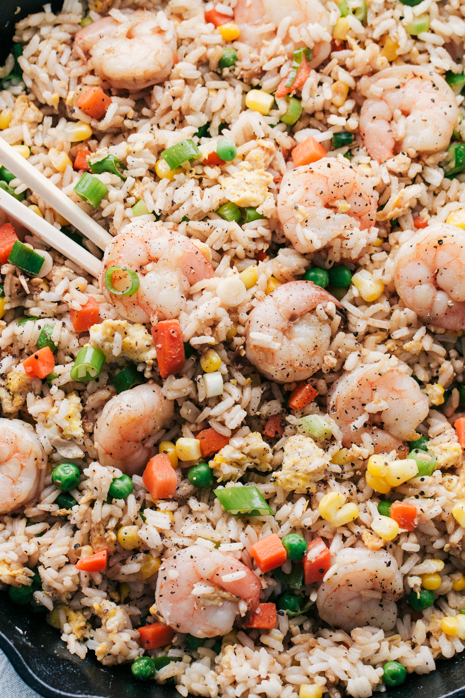
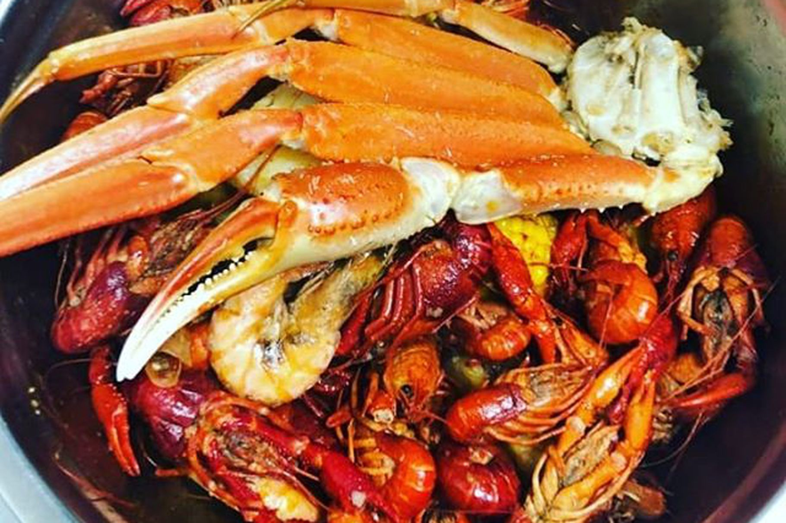
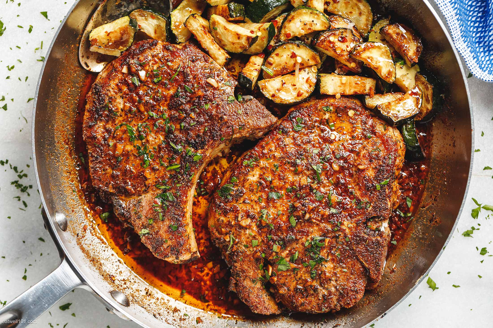
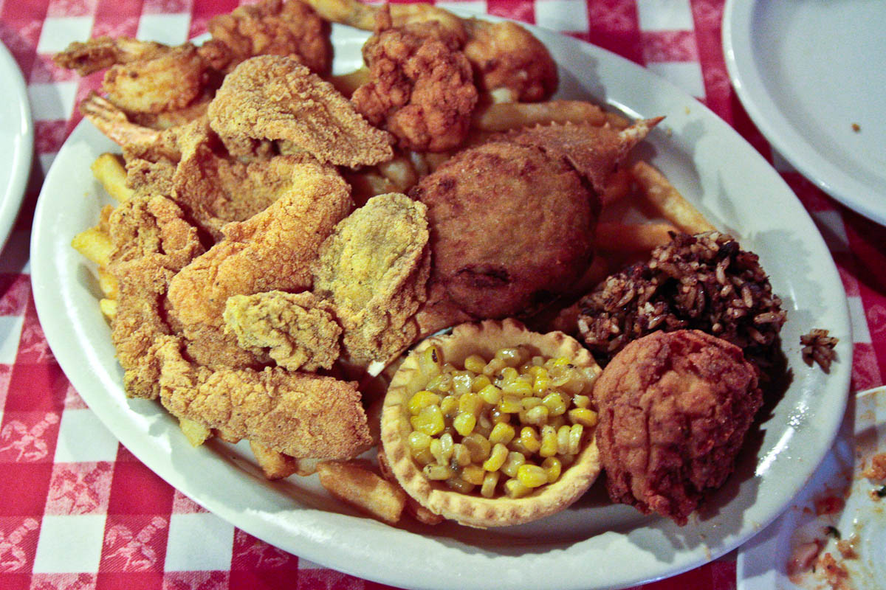

OUR AUDIENCE
Our audience/user base will be anyone who wishes to enjoy authentic cajun dishes in a classy environment. Due to the high prices of the menu items, we expect most users to be older. Because of this, the site should be easy to navigate and avoid complex layouts. Text on the site should be clear and easy to read, even for those with poor sight. All clickable elements should be big so that our users can easily use them. All images should be clear and not involve any harsh colors that may be unpleasant to look at.





We want our website to show our restaurant as a fine dining experience that offers a taste of cajun cuisine. We would like to display our menu, in a format very similar to what they would see in person at the restaurant, information about our origins and our restaurant with images of the inner decor of the restaurant, and testimonials from customers that will draw in more customers on separate pages. We would also like a page to show the awards our restaurant has received. We would like to have some pictures of our recognizable dishes on the main home page. We also want to give the option to users to book reservations at least a week in advance.